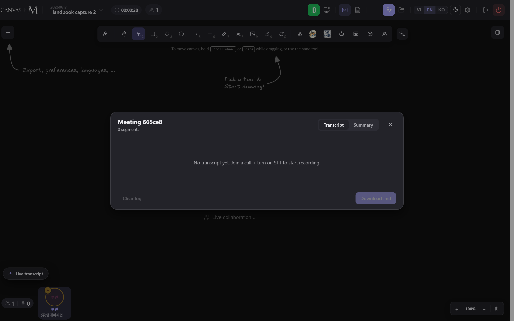

Captions & transcript
Canvas M can listen to the room and write it down. A live caption strip floats subtitles at the bottom of a shared screen; a draggable Live transcript panel keeps the full, scrollable history. Both can translate into the language you prefer, line by line. This chapter covers every toggle, state and error you will meet as a participant, and gently points out where the host holds the controls.
Two views of one stream
Speech-to-text (STT) turns spoken audio into text in real time. Canvas M shows that text in two places, and both read the same underlying stream — turning a knob in one is reflected in the other.
The Live transcript panel is the full record: every finalised line, oldest at the top, with a speaker name, a timestamp and (optionally) a translation beneath. It is a scrollable history you can drag, resize and leave open. The caption strip is a glance-only layer: a slim glass band pinned to the bottom of whatever is being shared, showing only the newest one to three lines of whoever is speaking right now, then auto-hiding after a few seconds of silence.
The panel is the record. The strip is the glance. Same words, two windows.
Two kinds of line exist. An interim line is a still-changing guess — it appears dimmed and italic, and is never translated (it would flicker word by word). A final line is locked in; only finals get a translation.
Show the Live transcript panel
- Find the floating Live transcript pill near the bottom-left of the canvas. A small number badge on it counts the segments captured so far.
- Click it. The panel opens already scrolled to the newest line.
- To start capturing your own voice, click STT: off so it becomes STT: on — your mic is now transcribed live.
- To read everyone in your own language, click Translate: off so it becomes Translate: on; each finalised line gains an italic translation beneath it.
- Drag the panel by its header to reposition it; drag the bottom-right corner to resize. Double-click the header to snap it back to the default size and place.
- Click × (titled Hide (still logging in background)) to tuck the panel away. Recognition keeps running while it is hidden.
→ The panel lists finalised lines with a speaker name, a clock time and — when translation is on and the language differs — a translated line beneath. Your own in-progress speech appears at the bottom marked speaking….
Toggling STT or Translate here is the same switch the caption strip obeys. Turn translation on once and both surfaces speak your language.

Whether STT starts on for everyone by default is part of the host's meeting setup; as a participant you can always flip your own STT and Translate from this panel.
Transcript panel reference
| Control | Label / states | What it does |
|---|---|---|
| Show button | Live transcript (with a count badge) | Opens the panel. The badge shows how many segments exist. |
| STT toggle | STT: on / STT: off | Turns speech recognition of your mic on or off. Tooltip: Turn on/off speech recognition. Hidden in review (read-only) mode. |
| Translate toggle | Translate: on / Translate: off | Translates each finalised segment into your preferred language. Tooltip: Translate transcript to preferred language. |
| STT model | STT model dropdown (default Deepgram Nova-3) | Picks the recognition model; each option shows its per-minute price. Changing it restarts the live session. Hidden in review mode. |
| Language I speak | English · 한국어 · Tiếng Việt | The language Deepgram transcribes your mic in — independent of the app's interface language. Changing it restarts your session. |
| Density toggle | Full / Compact | Full shows the whole scrollable history; Compact shows only the 3 newest lines with trimmed chrome and hides the configuration row. |
| Test file | Test file / Testing… | A testing aid: plays an audio file through the recognition pipeline. Hidden in review mode. |
| Hide | × — Hide (still logging in background) | Closes the panel without stopping recognition. |
| Resize handle | bottom-right corner | Drag to resize; the panel remembers its size and position on this device. |
Your spoken-language, model, density and translate choices are saved per device, so they survive a reload. In Compact mode the whole settings row is hidden — switch back to Full to reach the model, language and test controls.
What the status badge is telling you
STT is on and your mic audio is genuinely flowing into recognition — a pulsing dot and three rippling level bars. This is the only state that proves the mic is actually being heard.
STT is on but nothing has reached it for a couple of seconds — a hollow amber ring. Usually a muted mic or a sound system that needs a tap to wake (common on iPad). Captions cannot appear until audio flows.
STT is off. Click STT: off to turn it on. The transcript body reads Turn on STT to start speech recognition.
Glance at the pill in the panel header whenever captions or transcript lines are not appearing — it separates "off" from "on but silent" from "genuinely live." Two more pills appear during the testing flow: TEST (an audio file is playing through the pipeline) and ERROR (the test failed). When STT is on and waiting, the body shows Waiting for someone to speak….
Live captions over a shared screen
When someone shares a screen, a thin glass caption strip appears along the bottom of the shared view and shows the newest lines of whoever is speaking. It is on by default, so captions light up automatically — no hunting for a toggle.
Each line carries the speaker's name in their personal colour, with a pulsing dot while they are still talking. After about four seconds of silence the strip collapses to a small CC puck and reappears on the next utterance. The strip rides whichever surface owns the view: the in-app viewer pane, the gallery, the presenter's picture-in-picture, or a plain overlay on the canvas. When you pop a shared screen out into its own window, the captions follow it there.
The × on the strip is titled Hide captions for now — it dismisses the current strip but leaves captions on, so they return on the next sentence. The CC button actually turns the feature off. Captions follow the same translation toggle as the transcript panel: with Translate on you read everyone in your language; with it off you see their original words verbatim, never a blank line.
Who can record, and what you see
- Look in the bottom call-controls bar for a small red record-dot. If you are a participant (not the host) it is greyed out.
- Hover it: the tooltip reads Only the host (Name) can record — this tells you who holds the control.
- When the host starts recording, an inline pill appears in everyone's call bar: a pulsing red dot and a ticking timer such as 0:05.
- Hover the pill as a participant to see Name is recording the meeting · 0:05. Your pill is read-only — it has no stop button.
- When the host stops, the pill disappears for everyone. The recording file downloads to the host's device only.
→ Recording state lives entirely in the call bar — there is no banner across the canvas. The same pill is shown to host and participants, so you always know when the meeting is being captured.
Only the host can start and stop recording, and the file saves to the host's machine. Recording captures audio (your mic plus peers) — it is separate from the text transcript, which any participant can keep with STT on.
Captions & transcript troubleshooting
No lines appear, status reads No audio — Mic muted, or the audio context is suspended (common on iPad after switching tabs).
Unmute your mic and speak; tap the page if needed to wake audio. The pill turns to Live with rippling bars once audio flows. → 14.5
Transcript body says Turn on STT to start speech recognition. — STT is off (status pill reads PAUSED).
Click STT: off in the panel so it reads STT: on. → 14.4
Lines stay in another language — Translation is off, or the line is still an interim guess.
Click Translate: off so it reads Translate: on; interim (dimmed, italic) lines are never translated — wait for the final line. → 14.3
Captions never appear over a shared screen — The CC button was switched off, leaving only the small CC puck.
Click the CC puck on the shared view to turn captions back on. → 14.6
Captions vanish mid-conversation — Normal behaviour — the strip auto-hides after ~4 seconds of silence.
Nothing to do; the strip returns on the next utterance. Use the line-count and text-size controls if it feels too small. → 14.6
I can't find a record button — Only the host can record; a participant's record-dot is disabled.
Ask the host to start recording. Hover the greyed dot to confirm who the host is. → 14.7
STT WebSocket error / STT error in the panel footer — The recognition connection dropped or failed to configure.
Toggle STT off and on to restart the session; check your network. The footer surfaces these errors so a silent failure stays visible. → 14.4
The No audio heartbeat exists precisely because "STT is on" never proved your mic was reaching recognition. When in doubt, trust the pulsing Live meter, not the toggle.